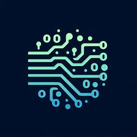

İki kişilik bir ekibiz; birimiz backend, diğerimiz projelerimizin frontend tarafı ile ilgilenmekte. Şu anki amacımız 'brilliantcat' isimli yazılım öğretme platformunu geliştirmek ve Teknofest 2025 de eğitim teknolojileri alanında derece elde etmek!